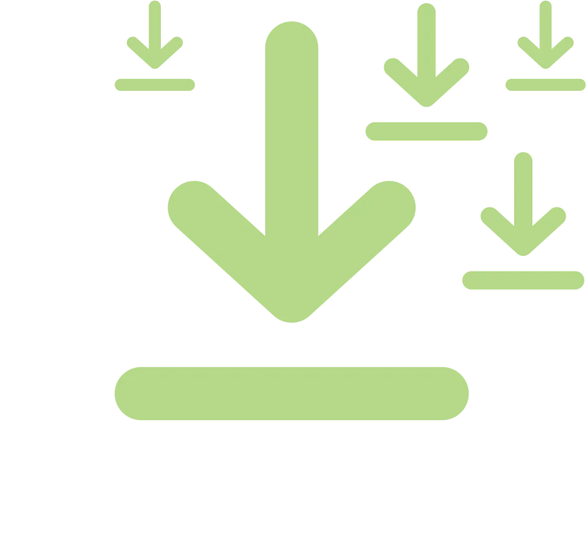
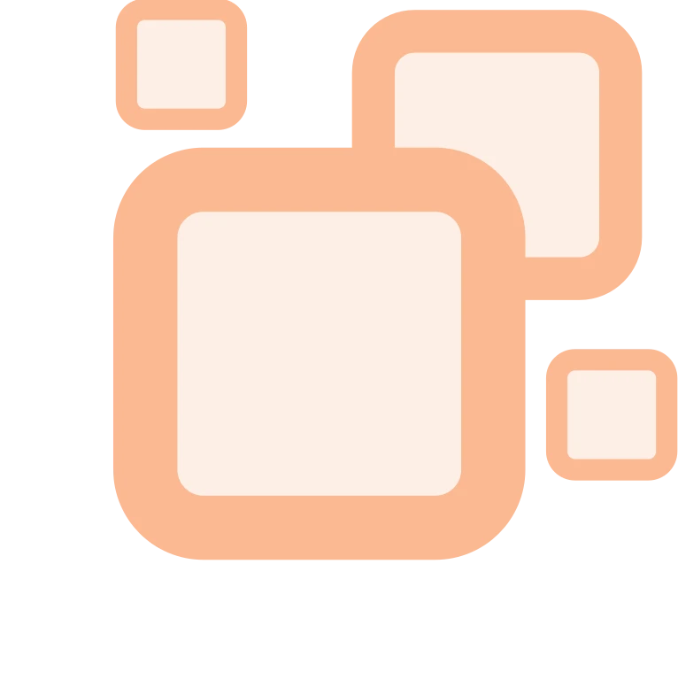

Deliver climate & sustainability messages that stick.
Here's a draft of our press release about our new battery program. Review it. Where could it be improved?
How I read this piece
Press release for media, industry/delivery-company stakeholders, and general readers, announcing the program's expansion — meant to generate positive coverage and build PowerLoop's credibility as a sustainability-minded logistics player. (Audience and goal inferred, not confirmed.) Nothing in the draft is flagged as fixed wording, though any tweak to the CEO/COO quotes below would need their sign-off before publication.
What's working
"Scooters also ran quieter than earlier models, an added benefit for the urban neighborhoods where deliveries take place" ties a technical detail to a concrete, local stake — exactly the kind of human connection that makes a story land, without needing a vignette.
"Our drivers are the backbone of this business, and their feedback shapes everything we do" credits an identifiable group as co-authors of the program's success rather than folding all the credit into the company.
The swap mechanism is explained in plain, jargon-free language ("Instead of waiting for a scooter to recharge, drivers simply swap a depleted battery for a fully charged one and get back on the road") — any reader can picture exactly how it works.
What I'd change
- The release leans on driver approval as its strongest proof point, but no
driver ever speaks for themselves — every quote comes from the CEO or COO.
- Currently: "In driver surveys conducted at the end of the pilot, the overwhelming majority of participating drivers said they would prefer to continue using the battery-swap system going forward."
- Suggested: add one named driver quote right after this sentence, describing a specific way the swap system changed their shift (fewer stalled deliveries, faster restart, etc.). A firsthand voice from the person actually experiencing the benefit is your most credible messenger, and it's currently unused.
- The headline claims — lower emissions, driver approval, growing demand — are
all asserted without numbers.
- Currently: "PowerLoop saw significantly lower emissions compared to traditional gas-powered delivery vehicles" and "the overwhelming majority of participating drivers said they would prefer to continue"
- Suggested: add real figures where you have them — e.g., "X% lower emissions than the gas scooters they replaced" and "X% of Y surveyed drivers." Reporters and partners can't cite an unquantified claim, and specifics make the sustainability story far more persuasive than adjectives alone.
- "Emissions" is the clinical term; "air pollution" is the more
concrete, relatable version of the same claim, and it appears twice.
- Currently: subhead — "cuts emissions, reduces downtime, and wins over drivers in initial rollout" / body — "PowerLoop saw significantly lower emissions compared to traditional gas-powered delivery vehicles"
- Suggested: "...cuts air pollution, reduces downtime..." and "...saw significantly less air pollution compared to..." Same facts, more resonance for a general reader.
- The CEO's "leading the charge" line, with no mention of other
companies or cities moving the same direction, makes this sound like one
company's solo bet rather than part of a broader industry shift — a credibility
risk, and a missed chance to signal that this is where the industry is headed
rather than a novelty.
- Currently: "This is a game-changing step forward for the delivery industry, and we're proud to be leading the charge toward a smarter, more sustainable future."
- Suggested (this changes an attributed quote, so it'd need Jordan Ellis's sign-off): "...we're proud to be part of the broader push toward smarter, more sustainable delivery." Worth also adding a line on other operators or cities adopting similar systems, if true — it signals momentum rather than a one-off.
- Every quote in the release comes from PowerLoop's own executives — no
outside voice (a delivery partner, city official, or driver) corroborates the
results.
- Location: after the driver-survey paragraph, or as a short new paragraph before the closing Ellis quote.
- Suggested: if you have one available, add a corroborating quote from a partner or municipal source — it gives skeptical trade press an independent reason to believe the numbers.
Want me to take a pass at revising it?
How it Works
You know what you need to communicate. Speak Sustainability makes sure it lands effectively.
Use Cases
Speak Sustainability levels up your communications at key points in your process.
-
Comms Critique
Improve your comms so your points have the impact you seek.
Spot the framing gaps, missing evidence, or buried lede that's quietly working against your message.
-
Land a Point
Focus on a specific point you need to land with an audience.
Get help sharpening one claim, quote, or stat so it holds up with a skeptical audience.

-
Frame Exploration
As you get started, find the breakthrough frames that match your comm goals.
Surface the identity, pride, or local-benefit angle that lands harder than jargon ever will.

Principles
The guidance is based on 8 principles grounded in science.
-
Focus on people rather than planetary abstractions — how they and their families are already experiencing climate impacts. Connect distant issues to local concerns like flooding, air quality, and outdoor recreation, and highlight personal benefits such as health, cost savings, and appealing technology like electric vehicles.
-
Use relatable language your audience already understands. Swap technical jargon for everyday terms — “overheating” instead of global warming, “extreme weather” instead of changing climate. Tell stories and find creative angles. Conservative audiences respond well to frames built around clean and healthy air, job creation, and stewardship.
-
Direct emotions toward solutions rather than despair. Acknowledge the severity, but emphasize optimistic pathways forward — doom-focused messaging tends to create anxiety and disengagement. Channel emotions like anger, hope, and pride constructively by showing people solutions and connecting challenges to actions they can take.
-
Build self-efficacy by pointing people toward high-impact actions they can realistically take. Meet people where they are rather than demanding immediate transformation, and suggest gradual steps that fit their circumstances instead of expecting everyone to adopt extreme changes at once.
-
Solving climate change takes “all solutions on deck” collaboration across society. Help people see themselves as part of a larger group taking action, rather than placing blame on individuals — which only creates guilt and shame.
-
Show that climate-friendly behaviors are widespread and socially valued. Share examples of people already engaged in these practices and highlight rising adoption. Avoid discouraging statistics that suggest low participation, which signals the behavior is uncommon.
-
Choose messengers carefully, prioritizing people who are relatable and diverse and can model the behavior convincingly. Climate scientists and immediate family members are among the most trusted sources, so other messengers should focus on listening and modeling rather than claiming expertise.
-
Emphasize what audiences have in common rather than what divides them. Because the consensus is strong, avoid amplifying denial arguments unnecessarily. When you do address misinformation, frame it as something only a small share of people believe rather than giving disagreement undue prominence.
Sign Up